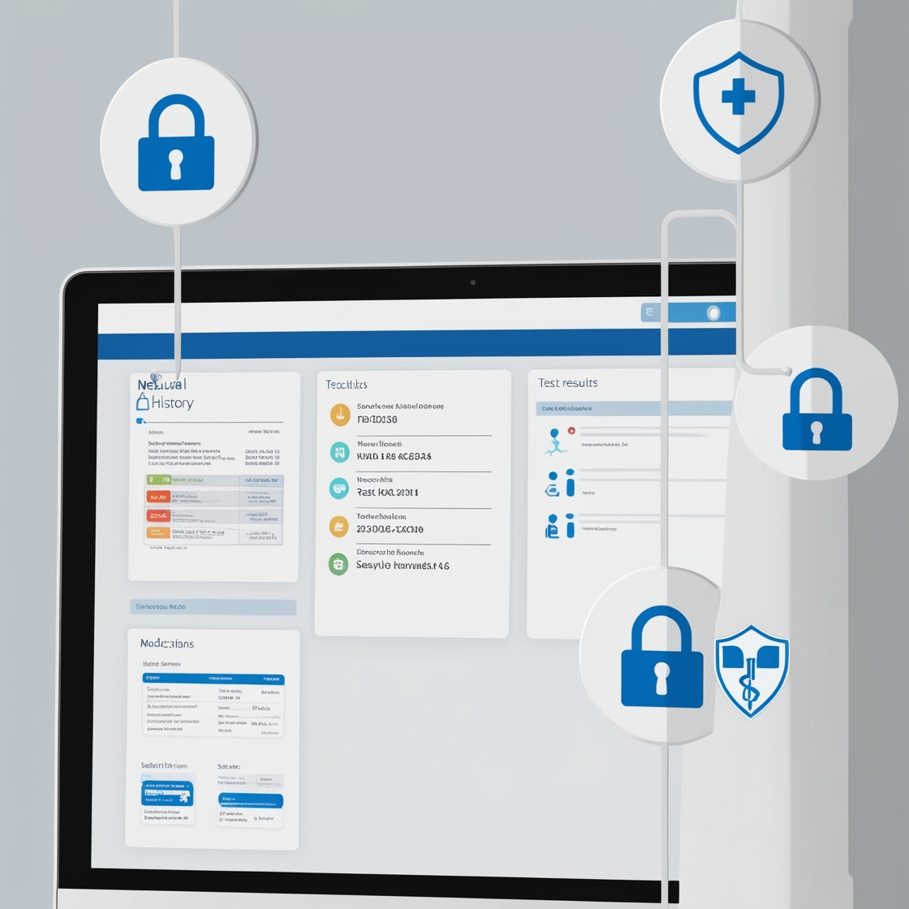

הבריאות שלך בעידן הדיגיטלי:
למה אבטחת מידע חשובה לכולנו
דמיינו שאתם מתעוררים עם כאב ראש חזק. במקום לקבוע תור לרופא, היום אתם פותחים אפליקציה בטלפון, קובעים תור לרופא אונליין, מתארים את הסימפטומים, ומקבלים המלצה לטיפול תוך דקות. נשמע נהדר, נכון? אבל מה קורה למידע הרפואי שלכם אחרי שנכנסתם לתיק הרפואי שלך?

הבריאות הדיגיטלית בחיינו
הטכנולוגיה הרפואית משנה את חווית הטיפול הרפואי שלנו ומשתלבת בחיינו היומיומיים בצורה שלא הכרנו בעבר. שימושים יומיומיים בטכנולוגיה רפואית כוללים אפליקציות בריאות, שעונים חכמים, ומעקב אחר תרופות. הנוחות והיתרונות שהבריאות הדיגיטלית מביאה לחיינו הם משמעותיים, כאשר אנו מקבלים גישה למידע רפואי בכל רגע, מנטרים את מצבנו הבריאותי, ומשתפים את המידע עם גורמי טיפול במהירות ובקלות.
המידע הרפואי שלנו - יותר חשוף מאי פעם
כמות וסוגי המידע הרפואי שנאסף עלינו דיגיטלית הם עצומים. מדובר בהיסטוריה רפואית, תוצאות בדיקות, תרופות, ועוד. המידע הזה רגיש במיוחד ויכול להשפיע על חיינו אם ייחשף, כולל השלכות על ביטוח, תעסוקה, ויחסים אישיים.
הסכנות שמאחורי הנוחות
אבטחת מידע רפואי היא נושא קריטי, וישנם תרחישים אפשריים של פגיעה באבטחת המידע הזה. דמיינו מישהו שנפגע מדליפת מידע רפואי - ההשלכות יכולות להיות חמורות, כולל פגיעה בפרטיות האישית, תחושות של חרדה ואובדן אמון, ופגיעות מעשיות כמו סירוב לביטוח בריאות או פיטורים מעבודה.
למה זה מסובך כל כך?
מערכות בריאות דיגיטליות מורכבות מאוד. האתגר הוא לשמור על נוחות ונגישות למשתמשים מבלי לוותר על אבטחה. יש צורך בשיתוף מידע בין גורמי טיפול שונים, מה שמעלה את הצורך באבטחת המידע בצורה מיטבית.
מה עושים כדי להגן עלינו?
בדיקות חדירה ואבטחת מידע הן כלים חשובים בהגנה על המידע שלנו. בדיקות אלו עוזרות לזהות פרצות אבטחה ולתקן אותן לפני שהן מנוצלות לרעה. דוגמאות לשיפורים שנעשו בעקבות בדיקות אבטחה כוללות תיקון פרצות במערכות ניהול מידע רפואי ושיפור מנגנוני ההצפנה.
האחריות המשותפת
הגנה על המידע שלנו היא אחריות משותפת. ארגוני בריאות צריכים להשקיע באבטחת מידע ולהבטיח שהמערכות שלהם מאובטחות היטב. אנחנו, כמשתמשים, צריכים להיות מודעים לסיכונים ולנקוט צעדים להגנה על עצמנו, כמו שימוש בסיסמאות חזקות, עדכון תוכנות והכרת הסכנות הפוטנציאליות.
מבט לעתיד
בעתיד הקרוב, הבריאות הדיגיטלית תמשיך להתפתח. אתגרים חדשים יופיעו, כמו שימוש בבינה מלאכותית ורפואה מותאמת אישית. החזון הוא עולם שבו נהנים מיתרונות הטכנולוגיה בבטחה ובביטחון, ללא חשש לפגיעה בפרטיות.
בפעם הבאה שאתם משתמשים באפליקציה רפואית או מזינים מידע אישי באתר של קופת החולים, זכרו - המידע הזה הוא אתם. וכמו שאתם דואגים לבריאות שלכם, חשוב לדאוג גם לאבטחת המידע שלכם. כי בסופו של דבר, בריאות דיגיטלית בטוחה היא בריאות טובה יותר לכולנו.